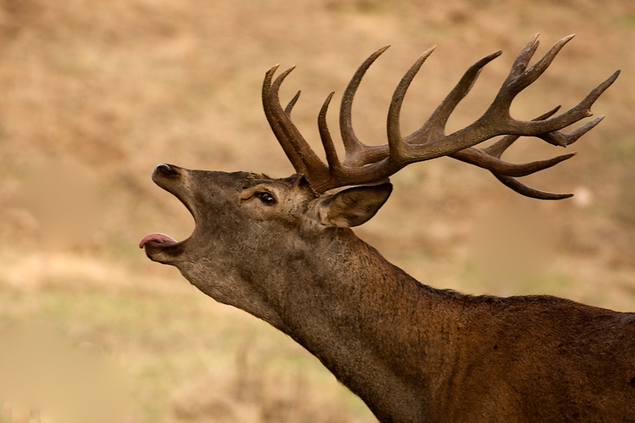

Audios naturaleza Tu navegador no soporta este formato de audio. Tu navegador no soporta este formato de audio. Tu navegador no soporta este formato de audio.
Imágenes naturaleza Ciervo en berrea.  Original por: Periodicoelgancho.com Lobo ibérico aullando Petirrojo trinando en una rama.